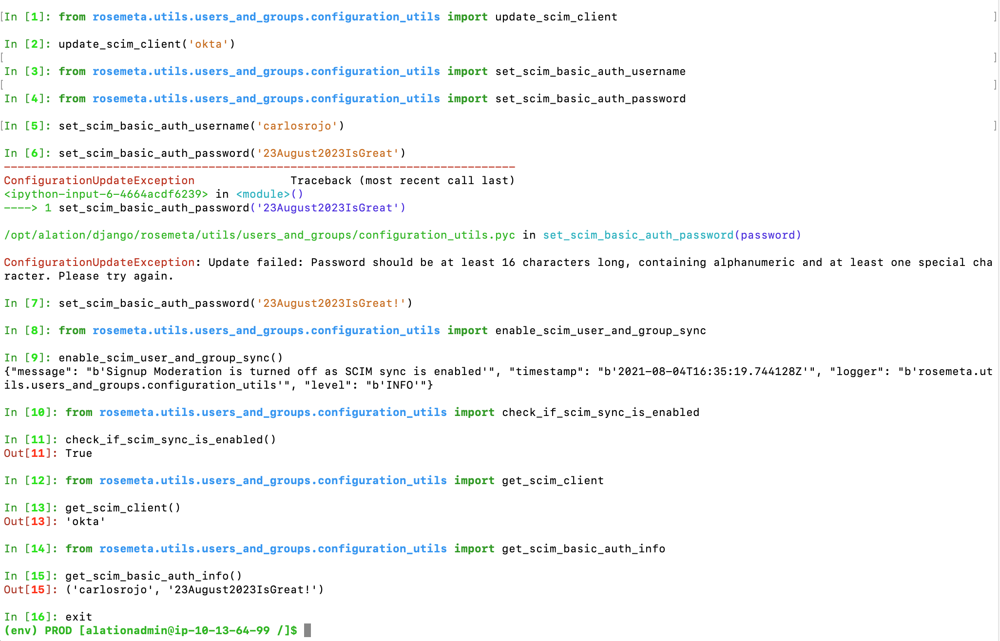

Enable SCIM Integration for User and Group Management¶
Available from release 2021.3
When SAML is in use as the authentication method in Alation, it is also possible to enable SCIM integration to auto-synchronize groups and group members between the IdP and Alation. With groups synchronized over SCIM, group membership does not need to be managed manually as the groups and group members will be automatically pushed to Alation from the IdP by the SCIM provisioning process. Changes to group membership and user properties will be picked up and applied automatically.
Note
SCIM 2.0 is an open specification that facilitates automated management of user identities and groups between identity providers and applications using REST API. Alation supports SCIM 2.0 (RFC7643 and RFC7644) to integrate with identity providers that support SCIM.
From version 2021.3, Alation supports basic authentication (username and password) for user and group synchronization with SCIM.
From version 2021.4, Alation supports both basic authentication and token authentication.
SCIM 2.0 is used by Alation for managing user account properties and groups but not for authentication. SAML must be configured as the authentication method before enabling SCIM.
Depending on the capabilities of the IdP, you may be able to use one application on the IdP side to configure both SAML authentication and SCIM provisioning or two applications specialized for these two functions.
If using two applications, note that user and group assignments should be consistent in both of them so that all groups members synced over SCIM are able to log in to Alation. If a user is assigned to the SAML app but not to the SCIM app, this account will be created in Alation but the user will not be managed with SCIM: the automatic sync process will not be able to update user information or deactivate this user in Alation. On the other hand, if a user is assigned to the SCIM app but not to the SAML app, this user’s information will be synced to Alation, but the user will not be able to log in.
We recommend getting the assistance of your IdP admin to perform end-to-end configuration for SCIM.
How Does Group Sync Over SCIM Work?¶
Let’s assume that an admin has enabled SCIM integration for an Alation instance, and now users and groups are auto-synchronized between Alation and the IdP. SCIM enablement makes specific manual admin actions unavailable as users and groups will now be provisioned from an external application. See the table below for comparison of Alation user and group management capabilities with SCIM integration enabled vs. disabled:
Actions |
SAML, SCIM disabled |
SAML, SCIM enabled |
|---|---|---|
Users can sign up for an Alation account on the Alation login screen |
No |
No |
Users log in from their IdP login screen or from their IdP dashboard |
Yes |
Yes |
Admins can choose to moderate account sign-ups |
Yes |
No |
Admins can manually activate users |
Yes |
No* * With the exception of users whose accounts are not pushed from the IdP, for example, accounts created before enabling SCIM sync |
Admins can manually suspend users |
Yes |
No * * With the exception of users whose accounts are not pushed from the IdP, for example, accounts created before enabling SCIM sync |
Users can manually change the Display Name under User Profile |
Yes |
No On hover-over, users see a message that the Display Name is supplied using an automatic process |
Users can manually change the email under User Profile |
Yes |
No On hover-over, users see a prompt to contact their directory admin to change the email |
Admins can manually create, edit, and delete a group that is Defined in Alation |
Yes |
Yes |
Admins can manually create or delete a SCIM group |
No |
No |
Admins can manually assign roles to groups |
Yes |
Yes |
Admin can toggle on feature Use Custom Groups to manage user suspension and activation on the Groups page |
Yes |
No This feature cannot be enabled when the automatic identity management process is in use |
Role Assignment Using Custom Groups¶
SAML, SCIM enabled or disabled |
Use Groups to Assign Roles disabled |
Use Groups to Assign Roles enabled |
|---|---|---|
Admins can manually assign roles to groups |
Yes |
Yes |
Admins can manually assign roles to users |
Yes |
No |
With SCIM integration enabled, Alation supports the push of users and groups from the IdP to Alation. Any consequent changes in the IdP directory will be picked up immediately or after a short period of time depending on the configuration of the provisioning process on the IdP side.
Configure SCIM Integration¶
Configuration for SCIM integration has to be performed on both the Alation server and the IdP side. Start with configuring Alation and then perform the required configuration in your IdP.
SCIM integration is configured using the Django shell of the Alation server. The configurations are saved in the corresponding alation_conf parameter values and can be later viewed using alation_conf. See View SCIM Configuration in alation_conf for more information.
Note
SCIM configuration must not be performed by modifying the alation_conf parameters directly.
Prerequisites¶
Your Alation instance uses SAML as the authentication method. SAML has been successfully configured and enabled. See User Authentication With SAML about configuring SAML authentication in Alation.
Your IdP supports SCIM 2.0, basic or token authentication for SCIM 2.0, and has a way to enable SCIM for integrations with service providers.
The admin configuring SCIM must have or know a user account in Alation with the Server Admin role. This account will be used to log in, test, and complete the configuration. This account should be assigned to the SAML application integration to enable the admin user to log in. Plan which Server Admin user account you are going to test with.
Check if the feature Use Custom Groups to Assign User Roles is enabled on your instance. If yes, make sure that the Server Admin account you plan to use for testing the SCIM setup is in a custom group with the Server Admin role mapped to it. When SCIM is enabled, this user must be able to log in as a Server Admin.
Network Configuration¶
The SCIM protocol requires that your IdP should be able to access the network hosting your Alation instance. For example, if your Alation instance is installed in a network provided by AWS, GCP, or MS Azure, you may have to allow the IP address range of the IdP on your network so that the IdP can reach the Alation server using SCIM.
The configuration will differ for each network provider and each IdP. You can use the following examples:
Configuration Steps¶
To configure SCIM integration:
SSH to the Alation server and enter the Alation shell:
sudo /etc/init.d/alation shell
Enter the Django shell:
alation_django_shell
Run the command given below to set the SCIM client. The SCIM client is the application that pushes user identity and group data to the target service provider (Alation) using SCIM API. The client initiates SCIM HTTP requests for the push. Supported values for the SCIM client are:
okta (default)
pingfederate
one_identity
azure_active_directory
Values should be provided in single quotes.
from rosemeta.utils.users_and_groups.configuration_utils import update_scim_client update_scim_client('identity_provider')
Example 1: Okta
from rosemeta.utils.users_and_groups.configuration_utils import update_scim_client update_scim_client('okta')
Example 2: Azure AD
from rosemeta.utils.users_and_groups.configuration_utils import update_scim_client update_scim_client('azure_active_directory')
Set either basic authentication credentials or the access token for SCIM.
Note
Okta supports both basic authentication and token authentication. Azure AD requires token authentication.
4.1 Basic Authentication
Run the commands given below from the Alation Django shell to set basic authentication credentials for the SCIM service account to be used by the IdP to authenticate with Alation. Values should be provided in single quotes.
Important
The password must be longer than 16 characters. It must contain alphanumeric characters and at least one special character. Setting up this service account does not create a user in Alation. These credentials cannot access Alation and will only be used for authentication by the SCIM client. They do not have to map to an existing Alation user.
from rosemeta.utils.users_and_groups.configuration_utils import set_scim_basic_auth_username from rosemeta.utils.users_and_groups.configuration_utils import set_scim_basic_auth_password set_scim_basic_auth_username('your_username') set_scim_basic_auth_password('your_password')
Example:
set_scim_basic_auth_username('scim_account_username@alation.com') set_scim_basic_auth_password('scim_account_password_12345&&')
Note down the username and password and store them safely. They will be required later when you configure SCIM integration on the IdP side.
Note
Alation does not enforce changing the password of the SCIM service account. If necessary, change the password at regular intervals according to the security policy at your company.
4.2 Token authentication (available from version 2021.4)
The SCIM bearer token has an expiry period of 6 month. The expiry period cannot be customized. If security policies at your organization require that the tokens should be updated more often than every 6 months, set a new token after the required period of time. See Managing Token Authentication for SCIM Sync.
Use the command below in the Alation Django shell to set the SCIM bearer token:
from rosemeta.utils.users_and_groups.configuration_utils import set_scim_bearer_token set_scim_bearer_token()
After setting the token, retrieve its value with the following command:
from rosemeta.utils.users_and_groups.configuration_utils import get_scim_bearer_token get_scim_bearer_token()
Note down the token and store it safely. It will be required later when you configure SCIM integration on the IdP side.
Enable SCIM sync. SCIM sync is an automatic process that keeps groups and users in the IdP and Alation synchronized. Enabling it means that user and group management in Alation will be controlled by this automatic process. It will turn off sign-up moderation and some other admin features: see How Does Group Sync Over SCIM Work?
from rosemeta.utils.users_and_groups.configuration_utils import enable_scim_user_and_group_sync enable_scim_user_and_group_sync()
Review the configurations:
from rosemeta.utils.users_and_groups.configuration_utils import check_if_scim_sync_is_enabled check_if_scim_sync_is_enabled() from rosemeta.utils.users_and_groups.configuration_utils import get_scim_client get_scim_client()
To review the basic authentication credentials:
from rosemeta.utils.users_and_groups.configuration_utils import get_scim_basic_auth_info get_scim_basic_auth_info()
To review the token:
from rosemeta.utils.users_and_groups.configuration_utils import get_scim_bearer_token get_scim_bearer_token()
To exit the Django shell:
exitTo exit the Alation shell:
exitComplete the setup on the IdP side.
Test the configuration: Testing SCIM Configuration.
Example console output for SCIM setup¶

Disable SCIM Sync¶
To stop syncing users and groups over SCIM, follow these steps:
On the Alation host, enter the Alation shell and enter the Django shell:
sudo /etc/init.d/alation shell alation_django_shell
In the Django shell, run the code given below to disable SCIM sync on the Alation instance:
from rosemeta.utils.users_and_groups.configuration_utils import disable_sync_from_directory_provider disable_sync_from_directory_provider()
Disabling SCIM sync does not revert any synced user and Group data. It only stops the automatic synchronization between Alation and the IdP.
Troubleshooting¶
For error messages and troubleshooting tips, see Troubleshooting SCIM Configuration.
Changing SCIM Provider¶
An Admin may need to switch to a different IdP. The user and group records synced from the previous IdP will have to be cleaned up before changing the SCIM client configuration on the Alation server. User and group records will not be cleaned-up automatically. Alation can provide a script to clean the old records. Contact Alation Support for assistance.